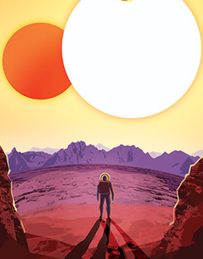
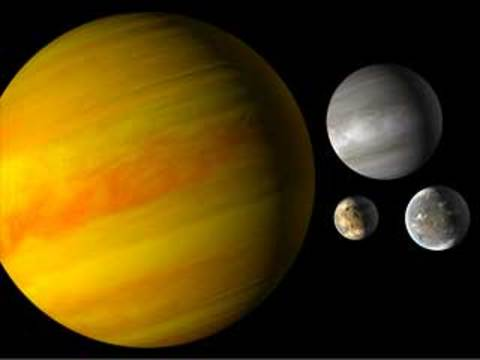
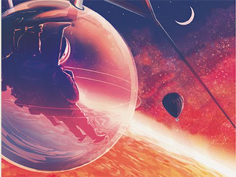

Plant Types
The Solar System: Planets and Beyond
The The planets beyond our solar system are called “exoplanets,” and they come in a wide variety of sizes, from gas giants larger than Jupiter to small, rocky planets about as big around as Earth or Mars. They can be hot enough to boil metal or locked in deep freeze. They can orbit their stars so tightly that a “year” lasts only a few days; they can orbit two suns at once. Some exoplanets are sunless rogues, wandering through the galaxy in permanent darkness.




Variety is a major theme in exoplanet discoveries over the past quarter century, as shown in this illustration. Most have been discovered by the "transit" method – watching for the tiniest of shadows as a planet crosses the face of its star. Credit: NASA/JPL-Caltech